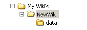
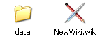

parent nodes: CommandLineSupport | FilesWikiFileStoreIp | HtmlCss | TextBlocks | WikiControl | WikiDatabase | WikidPadFiles | WikiLockFile
Wiki Files
Contents:
Back
General
The files of a wiki are stored in a subdirectory of a directory of your choice. Each wiki has it's own directory with a number of subdirectories. By default the directory has the name of the wiki and mostly it's the same name as that of the (original) root page.
Wiki directory
A wiki directory contains a wiki configuration file with the name of the wiki and a ".wiki" extention and subdirectories like:"data" for the wiki database and other wiki data"file" to support the wiki file store (optional)
 
Furthermore it can contain additional subdirectories of your own choice, like one or more to store the results of html or other exports.
Top
Data subdirectory
The data directory is the location for:
• database files
Which files these are, is dependent on the database type of the wiki.
• func. pages
The wiki specific files for functions like:
• Cascading style sheets
For CSS this directory is the location for:wiki level wikistyle.css cascading style sheetwiki level wikipreview.css cascading style sheet
Top
previous: Back
parents: CommandLineSupport, FilesWikiFileStoreIp, HtmlCss, TextBlocks, WikiControl, WikiDatabase, WikidPadFiles, WikiLockFile
[help.status: done]